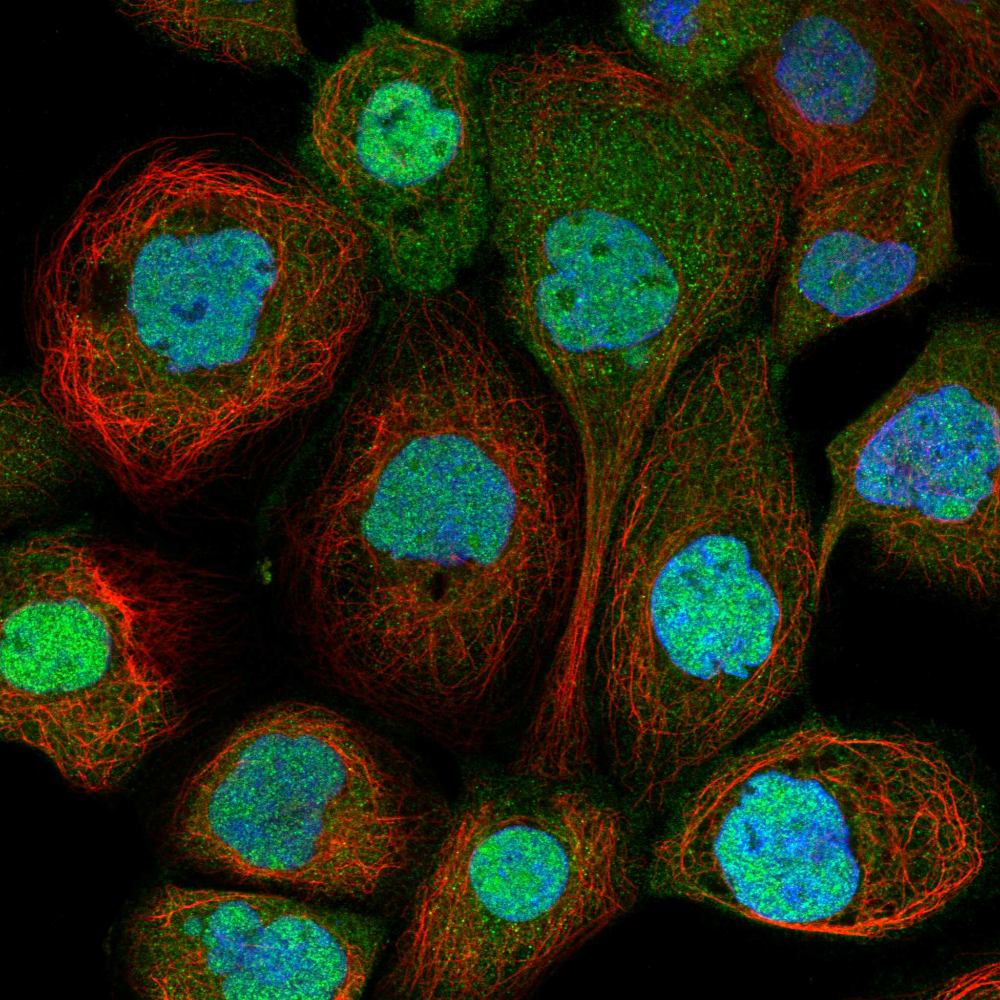
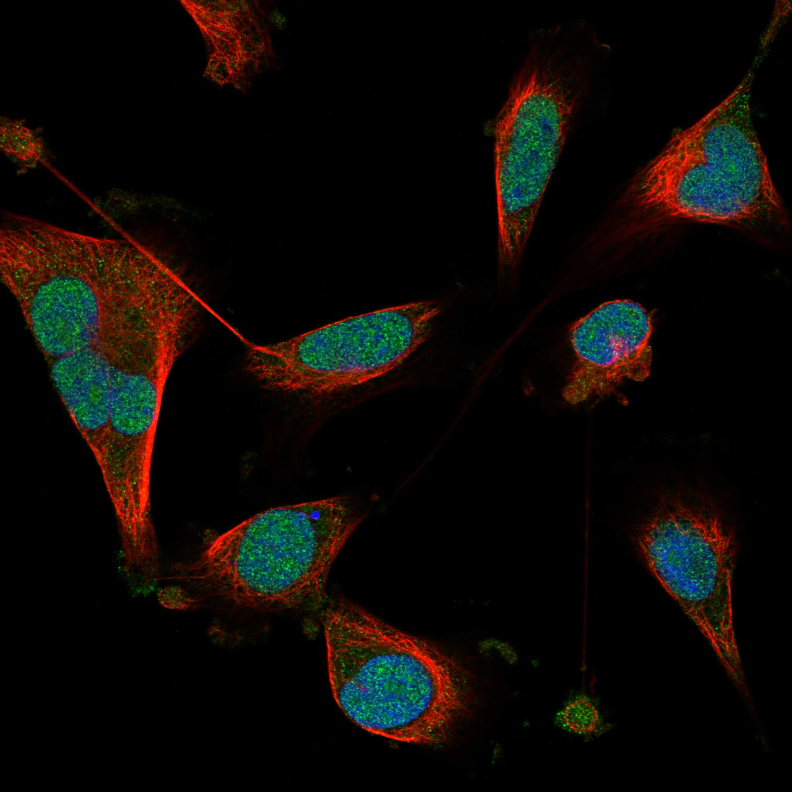
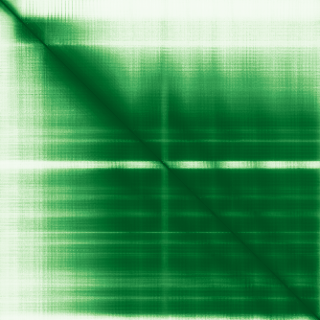

type: protein-evaluation gene: "HSF2BP" date: 2026-06-01 tags: [protein-scout, nucleoplasm, evaluation] status: scored ---
HSF2BP 核蛋白评估报告
1. 基本信息
| 项目 | 内容 |
|---|---|
| 基因名 / 别名 | HSF2BP / MEILB2 / Heat shock factor 2-binding protein |
| 蛋白全名 | Heat shock factor 2-binding protein |
| 蛋白大小 | 334 aa / 37.6 kDa |
| UniProt ID | O75031 |
HPA IF 图像:  
2. 评分总览
| 维度 | 得分 | 新权重 | 加权后 | 关键证据摘要 |
|---|---|---|---|---|
| 核定位特异性 | 6/10 | x4 | 24.0 | HPA Supported: Nucleoplasm (main) + Cytosol (additional); UniProt: Cytoplasm (ECO:0000250)+Chromosome (ECO:0000269); GO: chromosome+nucleoplasm (IDA)+cytosol (IDA) |
| 蛋白大小 | 8/10 | x1 | 8.0 | 334 aa, 37.6 kDa |
| 研究新颖性 | 10/10 | x5 | 50.0 | PubMed strict=15, 极度新颖 |
| 三维结构 | 9/10 | x3 | 27.0 | PDB: 7BDX (2.60A), 7LDG (2.56A), 8A50 (1.48A), 8A51 (1.90A); AlphaFold pLDDT=91.0, pct>90=79.9% |
| 调控结构域 | 7/10 | x2 | 14.0 | Armadillo-type fold (IPR011989/016024); meiotic recombination factor; BRCA2 interaction |
| PPI 网络 | 7/10 | x3 | 21.0 | STRING: BRCA2 (0.951, exp=0.913); IntAct: extensive Y2H network; UniProt: 200+ partners |
| 加权总分 | 144/180** | |||
| 互证加分 | +0.0 | 无额外互证加分（定位存在分歧: UniProt 标 Cytoplasm, HPA 标 Nucleoplasm） | ||
| 归一化总分 (÷1.83) | 78.7/100** |
3. 详细分析
3.1 核定位证据
| 来源 | 定位 | 可信度 |
|---|---|---|
| HPA | Nucleoplasm (main), Cytosol (additional) | Supported |
| UniProt | Cytoplasm (ECO:0000250), Chromosome (ECO:0000269) | Experimental |
| GO-CC | chromosome (IDA), cytosol (IDA), nucleoplasm (IDA) | - |
结论: HPA Supported 级别 Nucleoplasm 主定位。UniProt 注释偏胞浆/染色体，但 GO-CC 有 nucleoplasm IDA 证据。定位存在部分分歧，可能反映细胞周期/组织特异性核-质分布。
3.2 蛋白大小评估
334 aa, 37.6 kDa。适中大小，含 Armadillo-type repeat fold。
3.3 研究现状
| 指标 | 数值 |
|---|---|
| PubMed strict (Title/Abstract) | 15 |
| PubMed broad | 24 |
| 新颖性级别 | 极度新颖 |
PubMed 仅 15 篇严格文献。HSF2BP 主要在 meiosis (BRCA2/SPATA22 interaction)、spermatogenesis、lung adenocarcinoma、acute liver injury 方向有少量研究。极具探索空间。
关键文献: 1. Brandsma I et al. (2019). "HSF2BP Interacts with a Conserved Domain of BRCA2 and Is Required for Mouse Spermatogenesis." *Cell Rep*. PMID: 31242413 2. Liu J et al. (2025). "HSF2BP modulates lung adenocarcinoma proliferation and immune microenvironment via BNC1/TGF-beta/SMAD3 signaling pathway." *Sci Rep*. PMID: 41083582 3. Bi J et al. (2022). "HSF2BP protects against acute liver injury by regulating HSF2/HSP70/MAPK signaling in mice." *Cell Death Dis*. PMID: 36167792 4. Zhang J et al. (2023). "Overexpression of HSF2 binding protein suppresses endoplasmic reticulum stress via regulating subcellular localization of CDC73 in hepatocytes." *Cell Biosci*. PMID: 36964632 5. Ghouil R et al. (2023). "BRCA2-HSF2BP oligomeric ring disassembly by BRME1 promotes homologous recombination." *Sci Adv*. PMID: 37889963
3.4 三维结构分析
| 指标 | 数值 |
|---|---|
| AlphaFold | AF-O75031-F1 v6 |
| 平均 pLDDT | 91.0 |
| pLDDT >90 | 79.9% |
| pLDDT 70-90 | 11.7% |
| pLDDT 50-70 | 3.0% |
| pLDDT <50 | 5.4% |
| PDB | 7BDX (2.60A, aa122-334), 7LDG (2.56A, aa83-334), 8A50 (1.48A, BRCA2 peptide complex), 8A51 (1.90A) |
AlphaFold PAE: 
极高结构质量：pLDDT=91.0, 79.9% >90。4 个 PDB entries（含 1.48A 高分辨 BRCA2 复合物结构）。结构生物学可行性极高。
3.5 结构域分析
| 来源 | 结构域 | 备注 |
|---|---|---|
| InterPro | IPR011989 (Armadillo-like helical), IPR016024 (Armadillo-type fold), IPR039584 (HSF2BP) | Armadillo repeat scaffold protein |
| Pfam | 无 Pfam domain | — |
| PDB | 7BDX/7LDG (C-terminal armadillo domain), 8A50 (BRCA2 peptide complex) | 结构已知 |
Armadillo-type fold 支架蛋白，通过 C 端 armadillo repeats 与 BRCA2 形成复合物。meiotic recombination factor，参与 DSB repair 和 homologous recombination。非经典 DNA-binding protein。
3.6 PPI 网络（三源综合）
STRING 预测互作 (combined score >0.5):
| Partner | Score | Experimental | 功能类别 |
|---|---|---|---|
| BRCA2 | 0.951 | 0.913 | Homologous recombination |
| C19orf57 | 0.793 | 0.174 | Unknown |
| SPATA22 | 0.791 | 0.109 | Meiosis |
| MEIOB | 0.691 | 0 | Meiosis |
| HSF2 | 0.618 | 0.178 | Heat shock TF |
| SYCE2 | 0.599 | 0 | Synaptonemal complex |
| PALB2 | 0.579 | 0.095 | Homologous recombination |
实验验证互作 (IntAct, 精选):
| Partner | 方法 | PMID | 功能类别 |
|---|---|---|---|
| BRCA2 | Confirmed by PDB co-structure | multiple | Homologous recombination |
| HSF2 | two hybrid array | 32296183 | Heat shock TF (namesake) |
| CBX8 | two hybrid array | 32296183 | Polycomb repressor |
| SETDB1 | two hybrid array (UniProt) | — | H3K9 methyltransferase |
| HDAC4 | two hybrid array (UniProt) | — | Histone deacetylase |
| SMARCB1 | two hybrid array (UniProt) | — | SWI/SNF subunit |
| SMARCD1 | two hybrid array (UniProt) | — | SWI/SNF subunit |
| INO80B | two hybrid array (UniProt) | — | INO80 chromatin remodeler |
| POGZ | two hybrid array (UniProt) | — | Chromatin regulator |
| DPF2 | 6 experiments (UniProt) | — | BAF complex subunit |
| CDC73 | 4 experiments (UniProt) | — | PAF1 complex |
| BMI1 | two hybrid array (UniProt) | — | PRC1 complex |
| L3MBTL2/3/4 | two hybrid array (UniProt) | — | Polycomb repressors |
| HASPIN | two hybrid array (UniProt) | — | H3T3 kinase |
| H2AC25 | two hybrid array (UniProt) | — | Histone H2A |
| BAZ2B | two hybrid array (UniProt) | — | Chromatin remodeler |
UniProt 记录互作: 200+ Y2H partners (3experiments each), 部分高置信度 (CDC73 4exp, BEND7 5exp, ELOA2 5exp, TOX2 5exp, CEP57 6exp, CNNM1 6exp, DPF2 6exp, GGN 6exp, etc.)
PPI 网络极其庞大（200+ partners），显著富集染色质调控因子：Polycomb (CBX8, BMI1, L3MBTL2/3/4), SWI/SNF (SMARCB1, SMARCD1, DPF2), 组蛋白修饰 (HDAC4, SETDB1, HASPIN), INO80 复合体 (INO80B), PAF1 复合体 (CDC73)。BRCA2 互作结构已解析。染色质调控网络是其 PPI 核心特征。
3.7 多库互证
| 维度 | 来源 | 结果 | 是否一致 |
|---|---|---|---|
| 定位 | HPA / UniProt / GO | Nucleoplasm / Cytoplasm+Chromosome / nucleoplasm+cytosol+chromosome | GO-CC 与 HPA 一致有 nucleoplasm; UniProt 偏胞浆 |
| PPI | STRING / IntAct / UniProt | BRCA2+HSF2 多源确认; 染色质因子富集于 UniProt Y2H | BRCA2 强互证 |
| 结构 | AlphaFold + PDB | pLDDT=91.0 + 4 PDB entries | 实验+预测双重支持 |
互证加分明细: 无额外互证加分 (定位存在分歧) 总计: +0 / max +3
4. 总体评价
推荐等级: 4星 (78.7/100)
HSF2BP 极度新颖 (PM=15)，结构质量极高 (pLDDT=91.0 + 4 PDB entries)。PPI 网络最为突出：200+ 互作伙伴，富集 Polycomb/SWI-SNF/组蛋白修饰/INO80/PAF1 复合体成员，提示该蛋白是广泛染色质调控网络的支架蛋白。最核心的已知功能是 BRCA2 介导的 meiotic recombination。
核心优势: 1. PubMed=15，极度新颖 2. 结构质量极高: pLDDT=91.0 + 4 PDB (包括 1.48A BRCA2 复合物) 3. PPI 网络庞大且显著富集染色质调控因子: Polycomb/SWI-SNF/HDAC/HMT/INO80/PAF1 4. HPA Nucleoplasm 定位
风险/不确定性: 1. UniProt 定位偏胞浆, 与 HPA nucleoplasm 存在分歧 2. PPI 以高通量 Y2H 为主，需 coIP 验证 3. 大部分 PPI 来自单一 Y2H 平台 (PMID:32296183)
下一步建议:
- 内源 coIP-MS 验证与 Polycomb/SWI-SNF 复合体的互作
- ChIP-seq 确定染色质结合位点
- 功能获得/缺失实验，检测 H3K27me3/H3K9me3 等组蛋白修饰变化
5. 数据来源
- UniProt: https://www.uniprot.org/uniprotkb/O75031
- AlphaFold: https://alphafold.ebi.ac.uk/entry/O75031
- PDB: 7BDX, 7LDG, 8A50, 8A51
- PubMed: https://pubmed.ncbi.nlm.nih.gov/?term=%22HSF2BP%22%5BTitle/Abstract%5D
- HPA: https://www.proteinatlas.org/ENSG00000160207-HSF2BP
HPA IF 图像已本地嵌入。
PAE 图像说明: AlphaFold PAE 图像已重新获取并嵌入（见下方 PAE 图像修正块）；结构判断仍结合 pLDDT 与 PAE 综合判断。
<!-- AF_PAE_REPAIR_START --> PAE 图像修正（2026-06-05）: AlphaFold 提供 predicted aligned error 图像；此前“PAE 图像暂无数据”的表述为未获取/未嵌入导致。